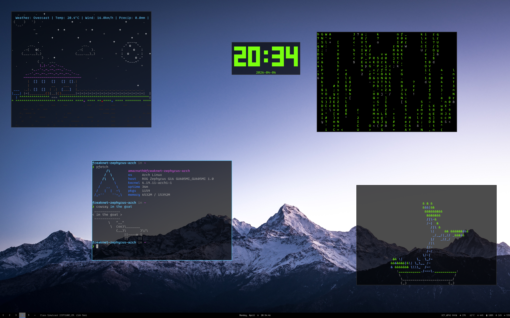
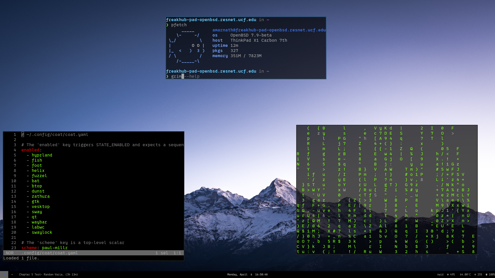
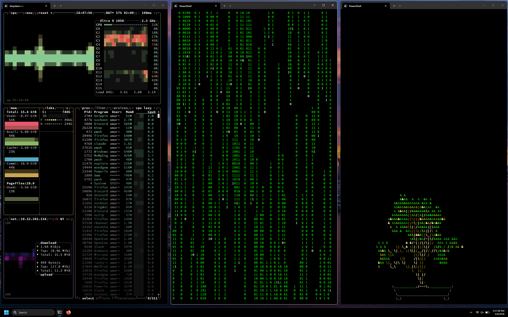

arch linux · openbsd · windows 11



git clone https://github.com/jeebuscrossaint/.dotfiles ~/.dotfiles
cd ~/.dotfiles
stow linux
coat applygit clone https://github.com/jeebuscrossaint/.dotfiles
cd .dotfiles
.\install.ps1Requires Scoop. See the Windows setup guide for package list.
| role | tool | notes |
|---|---|---|
| window manager | sway | wayland, i3-compatible |
| status bar | waybar | custom scripts for canvas, mpris, bt |
| terminal | foot | gpu-accelerated, server mode |
| shell | fish | custom functions, jit alias |
| editor | helix | modal, lsp support |
| launcher | fuzzel | wayland-native |
| file manager | ranger | coat colorscheme |
| compositor alt | labwc | openBSD / stacking fallback |
| theming | coat | base16, applies across all apps |
| notifications | dunst |
| role | tool | notes |
|---|---|---|
| window manager | glazewm | tiling, sway-like keybinds |
| terminal | windows terminal | black bg, white text |
| shell | powershell 7 | custom prompt, uutils coreutils |
| launcher | powertoys run | alt+space |
| file manager | lf | ranger-like |
| system monitor | btop | |
| unix tools | uutils-coreutils | auto-aliased in profile |
| editor | helix | same as linux |
Linux theming is handled by coat,
a base16 theme manager that applies a scheme across 17+ applications simultaneously
(terminal, editor, bar, GTK, Qt, etc). Current scheme: paul-millr.
Windows uses a static black/white theme — no coat dependency.